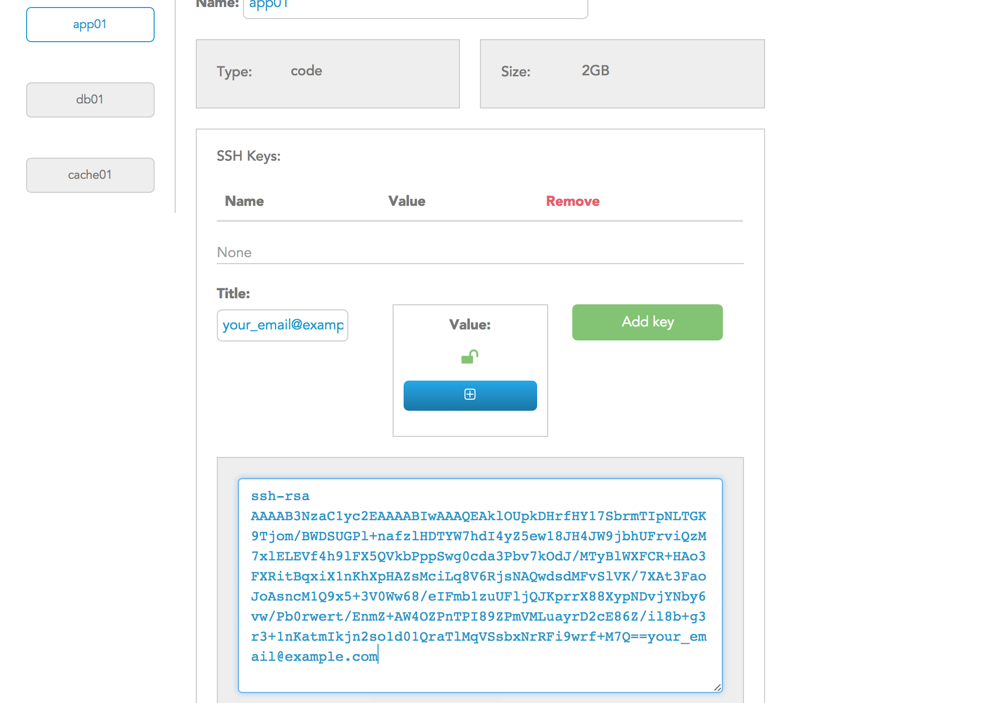

No one can drive us crazy unless we give them the keys.
— Douglas Horton
Once your environment is provisioned, you will be given a git url to push your code to. A public SSH key is required for you to push code to the Catalyze PaaS. Although the provisioning step happens after you enter your SSH key, we need the information in advance so we can authorize you (and only you) to push code to the PaaS.
Note that you will need to add a unique ssh key per user that you wish to authorize to push code to the Catalyze PaaS.
If you don’t already use SSH, you’ll need to create a public/private key pair to deploy code to Catalyze. This keypair is used for the strong cryptography and that uniquely identifies you as a developer when pushing code changes.
Just like Heroku, we support RSA and DSA key formats. ECDSA keys are currently not supported.
Note that the following instructions apply to Mac or Linux operating systems. Instructions for Windows will be added shortly. A full set of instructions is available here but is presented in this documentation in summary for quick reference. All credit to Github.
Navigate to your ssh directory (usually at ~/.ssh) and see if you already have a file called id_rsa.pub or id_dsa.pub
If you don't see it, then move to Step 2, otherwise go to Step 3
Copy and paste the commands below but substituting your email address for "your_email@example.com"
ssh-keygen -t rsa -C "your_email@example.com"
You will see some output in the terminal which looks like this. Press enter to keep the default name.
# Creates a new ssh key, using the provided email as a label
# Generating public/private rsa key pair.
# Enter file in which to save the key (/Users/you/.ssh/id_rsa): [Press enter]
Next, you'll have to come up with a strong passphrase. Make it something strong and memorable.
Enter passphrase (empty for no passphrase): [Type a passphrase]
# Enter same passphrase again: [Type passphrase again]
This will generate a key which you will then need to add to the ssh agent like so.
eval "$(ssh-agent -s)"
# wait until it starts and gives you a process ID
ssh-add ~/.ssh/id_rsa
Type in the following code which will copy the key to your clipboard so that you can directly (Command+v) paste it into the appropriate field in the dashboard.
pbcopy < ~/.ssh/id_rsa.pub
Paste the key that you just copied into the dashboard as shown below. You can put anything in the Title box. We recommend either the user's name or ideally the email address for which the key was generated. Once your click on the green "Add Key" button, you will see the listing of SSH keys above the text entry boxes. Note that you can add multiple ssh keys for each user you want to authorize to push code to the app.

If you make mistakes or someone within your team leaves or moves to a different project, you can always come back here and remove their SSH key by clicking on the red (x) next to their email. This is the reason why we also recommend either using the person's name or email address in the Title box.
The final step is to enter the environment related variables. We're very very very close!